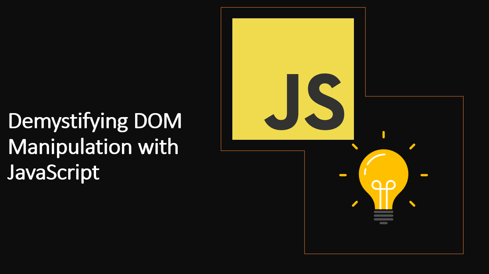

Introduction
The Document Object Model (DOM) serves as the bridge between JavaScript and HTML/CSS, enabling developers to interact with web page elements dynamically. With DOM manipulation, you can create dynamic and engaging web pages that respond to user interactions, update content, and enhance the overall user experience.
In this blog post, we will explore the fundamentals of DOM manipulation using JavaScript, providing you with the knowledge and tools to create interactive web pages like a pro.
What is DOM Manipulation?
The Document Object Model (DOM) is a programming interface for HTML and XML documents. It represents the page so that programs can change the document structure, style, and content. The DOM represents the document as nodes and objects. That way, programming languages can connect to the page.
Learn more about DOM Manipulation
Why is DOM Manipulation Important?
DOM manipulation is a core skill for web developers. It allows you to create dynamic web pages that respond to user interactions, update content, and enhance the overall user experience. With DOM manipulation, you can create dynamic and engaging web pages that respond to user interactions, update content, and enhance the overall user experience.
1. Accessing DOM Elements
DOM elements, such as HTML tags, can be accessed using various methods provided by JavaScript. Common methods include getElementById, getElementsByClassName, getElementsByTagName, and querySelector. These methods allow you to target specific elements on the page, making them available for manipulation.
Learn more about DOM Manipulation
As an example:
const myElement = document.getElementById("myElement");
const myElements = document.getElementsByClassName("myClass");
const myElements = document.getElementsByTagName("p");
const myElement = document.querySelector(".myClass");
const myElements = document.querySelectorAll(".myClass");
2. Manipulating DOM Elements
Once you have accessed an element, you can manipulate it using various methods provided by JavaScript. Common methods include innerHTML, innerText, textContent, and style. These methods allow you to change the content and style of an element.
Learn more about Manipulating DOM Elements
As an example:
const myElement = document.getElementById("myElement");
myElement.innerHTML = "Hello World!";
myElement.innerText = "Hello World!";
myElement.textContent = "Hello World!";
myElement.style.color = "red";
3. Creating DOM Elements
You can create new DOM elements using the createElement method. This method allows you to create new elements and append them to the DOM.
Learn more about Creating DOM Elements
As an example:
const myElement = document.createElement("div");
document.body.appendChild(myElement);
4. Removing DOM Elements
You can remove DOM elements using the removeChild method. This method allows you to remove elements from the DOM.
Learn more about Removing DOM Elements
As an example:
const myElement = document.getElementById("myElement");
document.body.removeChild(myElement);
5. Adding Event Listeners
You can add event listeners to DOM elements using the addEventListener method. This method allows you to listen for events on DOM elements.
Learn more about Adding Event Listeners
As an example:
const myElement = document.getElementById("myElement");
myElement.addEventListener("click", () => {
console.log("Hello World!");
});
6. Removing Event Listeners
You can remove event listeners from DOM elements using the removeEventListener method. This method allows you to remove event listeners from DOM elements.
Learn more about Removing Event Listeners
As an example:
const myElement = document.getElementById("myElement");
myElement.addEventListener("click", () => {
console.log("Hello World!");
});
myElement.removeEventListener("click", () => {
console.log("Hello World!");
});
7. Adding Classes
You can add classes to DOM elements using the classList.add method. This method allows you to add classes to DOM elements.
Learn more about Adding Classes
As an example:
const myElement = document.getElementById("myElement");
myElement.classList.add("myClass");
8. Removing Classes
You can remove classes from DOM elements using the classList.remove method. This method allows you to remove classes from DOM elements.
Learn more about Removing Classes
As an example:
const myElement = document.getElementById("myElement");
myElement.classList.add("myClass");
myElement.classList.remove("myClass");
9. Toggling Classes
You can toggle classes on DOM elements using the classList.toggle method. This method allows you to toggle classes on DOM elements.
Learn more about Toggling Classes
As an example:
const myElement = document.getElementById("myElement");
myElement.classList.toggle("myClass");
10. Checking if an Element has a Class
You can check if an element has a class using the classList.contains method. This method allows you to check if an element has a class.
Learn more about Checking if an Element has a Class
As an example:
const myElement = document.getElementById("myElement");
if (myElement.classList.contains("myClass")) {
console.log("The element has the class!");
}
11. Adding Attributes
You can add attributes to DOM elements using the setAttribute method. This method allows you to add attributes to DOM elements.
Learn more about Adding Attributes
As an example:
const myElement = document.getElementById("myElement");
myElement.setAttribute("id", "myElement");
12. Removing Attributes
You can remove attributes from DOM elements using the removeAttribute method. This method allows you to remove attributes from DOM elements.
Learn more about Removing Attributes
As an example:
const myElement = document.getElementById("myElement");
myElement.removeAttribute("id");
Conclusion
DOM manipulation is a core skill for web developers. It allows you to create dynamic web pages that respond to user interactions, update content, and enhance the overall user experience. With DOM manipulation, you can create dynamic and engaging web pages that respond to user interactions, update content, and enhance the overall user experience.
We hope you enjoyed this article and found it useful.
Happy Coding! 😇